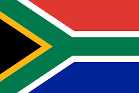

Discuss the role of the police in South Africa and in the book and make any comparatives with the police in Kenya.
To register people of different races
During Apartheid in South Africa, there were 4 different races. There were the white people, the blacks, Indians and the mix between white people and they called them the ‘colored people’ which was a result of interracial sex that at the time was illegal and that is why it was so important for the people to register their classifications to the police a part of them trying to implement the laws that caused a lot of relocations. Indian people were segregated from colored areas, which were segregated from black areas and then all separated from white areas and they all separated from one another by buffer zones of empty land.
Enforce the laws of the prohibition of sex between interracial sexes
Laws were passed prohibiting sex between Europeans and natives then later amended to prohibit sex between Whites and all nonwhites. There were police squads whose only job was to go around peeking through windows looking to catch interracial couple and once caught, the police would kick down the door, drag the people out, beat and arrest them then given a penalty of five years in prison
Ensuring there was Road safety
In the chapter RUN, there is this story of when Trevor and his Family were coming back from church and they had to use a Minibus since His mom’s car had broken down earlier, they waited for a minibus since at that time the government did not provide transport for black people but since the blacks worked for the Whites, they had to figure out a way to get to work from their ghetto to the white’s settlement so they invented a way of using Minibuses. So this day they wait for one for hours till they decide to start walking till a personal car finally drives by and offers a lift, They had not gone so far till a minibus appeared and the driver of the minibus approached the car and stopped the car Trevor and his family were riding on and gets violent saying the driver was not supposed to go picking their clients. The scene got too violent and so Patricia decides to ride with the driver of the minibus instead and on the way as the scene was being explained we see the book talking about there being Road blocks, Check points and that was put up by the police and after the incident between the drives over speeding and them jumping off the speeding Bus, they stop somewhere waiting on the Police to come pick them up.
To also ensure that the blacks had proper documentation to move around and Arrest people who passed The curfew set
According to the book, the ultimate law of the apartheid was to make South Africa a white country, by stripping all black people of their citizenship and relocate them to live in the homelands, the Bantustans and semi sovereign black territories. The whites would not function without black labor to produce its labor wealth and that meant that black people had to be allowed to live near white areas in the townships where government-planned ghettos were built to house black workers like Soweto However, for you to leave the township and work in the city, you had to carry a pass with your id number otherwise you would be arrested. There was also a curfew set and after a certain hour, blacks had to be back home or also risk arrest and all that was done by the police.
Now let’s discuss the roles of police in South Africa and Kenya and their similar in any way.
According to the research, the roles of police in South Africa and Kenya are very similar as we will see in the list below:
As outlined in Part III, section 24 of the National Police Service Act, the functions of the Kenya Police are:

• Provide assistance to the public when in need
• Maintenance of law and order
• Preservation of peace
• Protection of life and property
• Investigation of crimes
• Collection of criminal intelligence
• Prevention and deduction of crime
• Apprehension of offenders
• Enforcement of laws and regulations with which it is charged
• Performance of any other duties as may be assigned by the Inspector General in accordance with the law